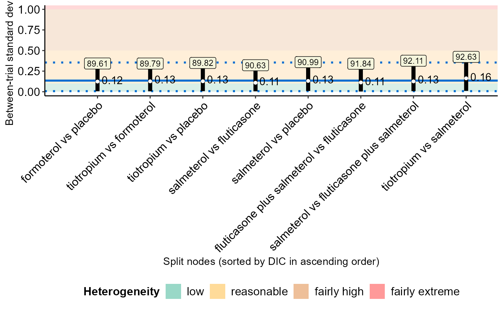

R/nodesplit.plot_function.R
nodesplit_plot.Rdnodesplit_plot hosts a toolkit of functions that
facilitates the comparison of the consistency model
(via run_model) with the node-splitting approach
(via run_nodesplit) regarding the posterior summaries of the
the direct and indirect effects and inconsistency factor of the split
nodes, the between-trial standard deviation and model assessment
parameters (Spiegelhalter et al., (2002)) after each split node in the
network.
nodesplit_plot(full, node, drug_names, save_xls)
| full | |
|---|---|
| node | An object of S3 class |
| drug_names | A vector of labels with the name of the interventions in
the order they appear in the argument |
| save_xls | Logical to indicate whether to export the tabulated results
to an 'xlsx' file (via the |
nodesplit_plot returns the following list of elements:
table_effect_size | A data-frame with the posterior mean, posterior standard deviation and 95% credible interval of the direct and indirect effect and the inconsistency factor of each split node. |
table_model_assessment | A data-frame with the model assessment parameters (deviance information criterion (DIC), posterior mean of total residual deviance, and number of effective parameters), the posterior median, posterior standard deviation and 95% credible interval of tau under the consistency model and after each split node. See 'Details'. |
intervalplot_inconsistency_factor | A panel of interval plots on the direct and indirect effect of the split nodes and the corresponding inconsistency factor. See 'Details'. |
intervalplot_tau | An interval plot on tau after each split node. See 'Details'. |
intervalplot_inconsistency_factor includes as many interval
plots as the number of split nodes in the network. Each interval plot
illustrates the posterior mean and 95% credible interval of the direct and
indirect effect of the split nodes and the corresponding inconsistency
factor.
The line that corresponds to the inconsistency factor is highlighted with
green, when it does not cross the vertical line of no difference (between
the direct and indirect effect), and red otherwise. If there are more than
30 split nodes, the function presents the interval plots on split nodes
with conclusive inconsistency factor (green intervals) or those with
inconsistent sign in the direct and indirect effect.
intervalplot_tau is a interval plot on the median and 95% credible
interval of tau after each split node. The lines that correspond to
the split nodes are sorted in ascending order of the DIC which appears at
the top of each line.
The 95% credible interval of tau under the consistency model
appears as a rectangle in the interval plot. When a fixed-effect model has
been performed, nodesplit_plot does not return the
intervalplot_tau.
The table_model_assessment also includes the column
DIC-based better fit that indicates the preferred model in terms of
parsimony for each split node. Therefore, the DIC of the model after each
split node is compared with the DIC of the consistency model
(Dias et al., (2010)). If the difference in DIC exceeds 5, the consistency
model is preferred; if the difference in DIC is less than -5, the model
after the split node is preferred; otherwise, there is little to choose
between the compared models.
The split nodes have been automatically selected via the
mtc.nodesplit.comparisons function of the
R-package gemtc.
See 'Details' in run_nodesplit.
Furthermore, nodesplit_plot exports both data-frames to separate
'xlsx' files (via the write_xlsx function) to the
working directory of the user.
nodesplit_plot can be used only for a network of interventions and
when there is at least one split node. Otherwise, the execution of the
function will be stopped and an error message will be printed on the R
console.
Dias S, Welton NJ, Caldwell DM, Ades AE. Checking consistency in mixed treatment comparison meta-analysis. Stat Med 2010;29(7-8):932--44. doi: 10.1002/sim.3767
Spiegelhalter DJ, Best NG, Carlin BP, van der Linde A. Bayesian measures of model complexity and fit. J R Stat Soc B 2002;64:583--616. doi: 10.1111/1467-9868.00353
Loukia M. Spineli
data("nma.baker2009") # Read results from 'run_model' (using the default arguments) res <- readRDS(system.file('extdata/res_baker.rds', package = 'rnmamod')) # Read results from 'run_nodesplit' (using the default arguments) node <- readRDS(system.file('extdata/node_baker.rds', package = 'rnmamod')) # The names of the interventions in the order they appear in the dataset interv_names <- c("placebo", "budesonide", "budesonide plus formoterol", "fluticasone", "fluticasone plus salmeterol", "formoterol", "salmeterol", "tiotropium") # Plot the results from both models nodesplit_plot(full = res, node = node, drug_names = interv_names) #> $table_effect_size #> #> #> |Node | Mean direct| SD direct|95% CrI direct | Mean indirect| SD indirect|95% CrI indirect | Mean IF| SD IF|95% CrI IF | #> |:------------------------------------------|-----------:|---------:|:---------------|-------------:|-----------:|:----------------|-------:|-----:|:-------------| #> |tiotropium vs placebo | -0.47| 0.22|(-0.91, -0.07)* | -1.17| 0.53|(-2.26, -0.24)* | 0.70| 0.51|(-0.21, 1.79) | #> |tiotropium vs formoterol | -1.57| 0.85|(-3.45, 0.03) | -0.09| 0.22|(-0.51, 0.33) | -1.48| 0.88|(-3.43, 0.2) | #> |formoterol vs placebo | -0.47| 0.27|(-1.03, 0.05) | 1.05| 0.98|(-0.52, 3.68) | -1.52| 0.97|(-4.14, 0.11) | #> |salmeterol vs fluticasone | -0.60| 0.24|(-1.08, -0.14)* | -0.23| 0.21|(-0.64, 0.19) | -0.38| 0.32|(-1, 0.22) | #> |salmeterol vs placebo | -0.45| 0.26|(-1.02, -0.04)* | -0.21| 0.62|(-1.36, 1.1) | -0.24| 0.59|(-1.53, 0.82) | #> |salmeterol vs fluticasone plus salmeterol | -0.43| 0.24|(-0.89, 0.02) | -0.25| 0.30|(-0.88, 0.31) | -0.19| 0.44|(-1.04, 0.75) | #> |fluticasone plus salmeterol vs fluticasone | -0.25| 0.24|(-0.74, 0.2) | -0.72| 0.45|(-1.57, 0.15) | 0.46| 0.45|(-0.44, 1.36) | #> |tiotropium vs salmeterol | -0.85| 0.40|(-1.61, -0.05)* | -0.05| 0.22|(-0.5, 0.35) | -0.79| 0.49|(-1.69, 0.21) | #> #> $table_model_assessment #> #> #> |Approach | DIC| Mean deviance| pD|DIC-based better fit | Median tau| SD tau|95% CrI tau | #> |:------------------------------------------|-----:|-------------:|-----:|:--------------------|----------:|------:|:------------| #> |NMA | 88.81| 54.05| 34.76|- | 0.14| 0.09|(0.01, 0.34) | #> |tiotropium vs placebo | 89.16| 53.33| 35.83|Little to choose | 0.12| 0.10|(0.01, 0.37) | #> |tiotropium vs formoterol | 89.60| 53.62| 35.98|Little to choose | 0.11| 0.09|(0, 0.32) | #> |formoterol vs placebo | 90.02| 53.54| 36.48|Little to choose | 0.13| 0.10|(0, 0.35) | #> |salmeterol vs fluticasone | 90.80| 53.48| 37.32|Little to choose | 0.11| 0.09|(0.01, 0.33) | #> |salmeterol vs placebo | 90.84| 54.35| 36.49|Little to choose | 0.12| 0.09|(0, 0.35) | #> |salmeterol vs fluticasone plus salmeterol | 91.99| 53.60| 38.39|Little to choose | 0.12| 0.10|(0.01, 0.39) | #> |fluticasone plus salmeterol vs fluticasone | 92.03| 53.54| 38.49|Little to choose | 0.13| 0.09|(0.01, 0.35) | #> |tiotropium vs salmeterol | 92.91| 54.08| 38.83|Little to choose | 0.18| 0.11|(0.01, 0.43) | #> #> $intervalplot_inconsistency_factor #> #> $intervalplot_tau  #>